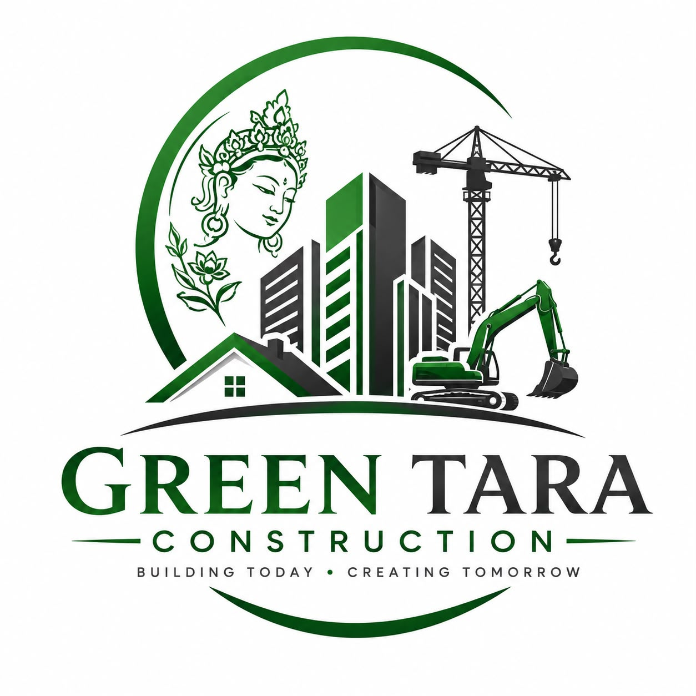

Reliable construction support, labour hire and builders cleaning services across Perth, Western Australia.
Call Us Request a QuoteDependable labour support for construction projects, site work and commercial projects.
Professional construction and post-build cleaning to prepare your project for handover.
Practical construction support for commercial developments and building projects.
Green Tara Construction provides reliable construction services with a focus on professional workmanship, dependable service and strong project support.
Phone: +61 474 500 468
Email: info@greentaraconstruction.com.au
Address: 9 Walton Street, Queens Park WA 6107